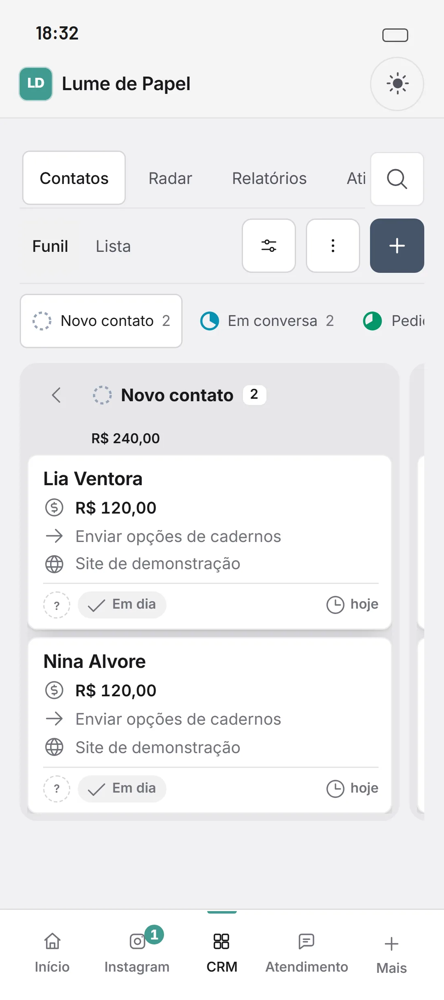

Sábado, 22:47
O cliente chama. O Agente responde na hora.
A resposta sai enquanto o interesse está quente, de dia ou de madrugada. São 24 horas, sem fila.
Agência de IA aplicada · interior de SP
Com IA, cuidando da operação de ponta a ponta: da marca ao anúncio, do WhatsApp à venda fechada.


Agente respondeuna hora, às 22:47
Anúncio no arInstagram e Facebook
Google Meu NegócioPerfil em dia
 Proposta enviadaPDF pelo celular
Proposta enviadaPDF pelo celular
Ninguém lembra da sua marca.Trecho 01 · Marca
O anúncio gasta e não traz gente.Trecho 02 · Tráfego pago
O Instagram parou no mês passado.Trecho 03 · Redes e Google
O WhatsApp responde no dia seguinte.Trecho 04 · Agente de IA
O orçamento ficou para depois.Trecho 05 · Funil de vendas
E tudo depende de você estar olhando.Trecho 06 · Feed Hub
A Feed assume a operação de ponta a ponta. Encontra onde a sua empresa trava e instala o que resolve, rodando na sua rotina.
Descobrir onde a minha travaDe ponta a ponta
Este é o caminho que o seu cliente faz. A Feed cuida de cada trecho, e um trecho conversa com o outro.
Este ponto é o seu cliente. Role para ele andar.
Marca
Logo, cores e voz que fazem a pessoa parar e lembrar de você.
Tráfego pago
Campanha no Instagram, no Facebook e no Google, levando direto para o WhatsApp.
Redes e Google Meu Negócio
Post toda semana, perfil do Google em dia e métricas na sua mão.
Agente de IA
No WhatsApp, 24 horas. Resolve o simples e passa para a equipe com o resumo pronto.
Funil de vendas
Cada oportunidade numa etapa, quem sumiu é lembrado e a proposta sai em PDF.
 Feed Hub
Feed Hub
Atendimento, vendas e aprovações no celular do dono.
Quer ver esse caminho desenhado na sua empresa?
Chamar no WhatsApp01Trecho 01 de 06A marca chama atenção
Antes do anúncio e do post vem a cara da empresa. A Feed desenha a marca e entrega o manual: logo, cores, letra, voz e como tudo aparece na rua e na tela.
Manual da marca · Lume de Papelmarca de demonstração
Lume de Papel
LogoFrauncespara os títulos
Barlow para os textos
Cadernos para presentear
PostPapel que guarda o que importa.
Voz da marcaSua marca merece um manual assim?
Falar sobre a minha marca02Trecho 02 de 06O anúncio traz gente
Campanhas no Instagram, no Facebook e no Google. A pessoa toca no anúncio e cai direto no WhatsApp, onde o Agente já está esperando.
Cadernos para presentear
lumedepapel Capa azul ou verde. Você escolhe, a gente embrulha.
cadernos para presente
Patrocinado
Lume de Papelwww.lumedepapel.demo
Cadernos para presente | Lume de Papel
Capa dura, costura à mão e embrulho incluso. Chame no WhatsApp e escolha a cor.
Chamar no WhatsAppComo chegar
Campanha do mês · Meta e Googleexemplo ilustrativo
0contatos no WhatsApp
Quer anúncio que termina em conversa?
Começar pelo Diagnóstico grátis03Trecho 03 de 06As redes mantêm a empresa viva
Instagram, Facebook e Google Meu Negócio cuidados toda semana. Você só aprova: o post sai sozinho e o painel mostra o que mudou.
Instagram e Facebook · 30 diasexemplo ilustrativo
seguidores novos no mês
0contas alcançadas
Google Meu Negócio · 30 diasexemplo ilustrativo
visualizações do perfil no Google
rotas pedidas até a loja
ligações pelo perfil
nota média em 0 avaliações
publicadoaprovado e agendadoaguardando você
comentário no postmarina.tavares AGENDA
mensagem direta, enviada sozinhaOi, Marina! Aqui está o link para você agendar: lumedepapel.demo/agendar
Quer parar de pensar no post da semana?
Chamar no WhatsApp04Trechos 04 e 05 de 06O Agente atende, o funil fecha
O Agente de IA atende o WhatsApp 24 horas, resolve o simples e passa para a sua equipe com o resumo pronto. Daí a conversa vira oportunidade no funil.
Sábado, 22:47
A resposta sai enquanto o interesse está quente, de dia ou de madrugada. São 24 horas, sem fila.
A conversa anda
Tira a dúvida, entende o pedido e pergunta o que falta, sem deixar ninguém esperando.
Passa para a equipe
Quando a conversa pede gente, ele passa para a sua equipe com tudo anotado. Ninguém pergunta de novo.
Funil de vendas
A conversa vira oportunidade numa etapa do funil. Quem sumiu ganha acompanhamento automático.
Proposta
Montada e enviada pelo celular, sem esperar chegar no escritório.
sábado
Lia VentoraOlá! Vocês fazem cadernos para presente?
Agente LumeOi, Lia! Fazemos sim. Você prefere capa azul ou verde?
Lia VentoraAzul! Preciso de dois para sexta.
Agente LumeAnotado! A equipe confirma a entrega com você.
Nota interna · Agente Lume Só a equipe vêResumo do Agente: Lia quer 2 cadernos azuis para presente. Prazo: sexta-feira. Próximo passo: confirmar entrega e enviar as opções.

Lume de Papel
Para Lia Ventora
Prova real
O Agente da Feed atende o WhatsApp da loja. A equipe assume quando a conversa pede e manda a proposta pelo celular, no Hub. E o funil acompanha cada lead, um por um.
O nome do cliente fica preservado. As telas e os números deste site são de demonstração.
Quer o Agente atendendo o seu WhatsApp?
Fazer o Diagnóstico grátis06Trecho 06 de 06O Hub mostra tudo
O Feed Hub é o app onde a sua equipe atende, vende e aprova tudo o que a Feed instala. Está no Google Play desde 09/11/2026.


Feed Hub para Android. A versão para iPhone vem depois.
Fora da linha · Agentes especialistas
Melhor ainda. A Feed monta um Agente para a tarefa que trava a sua empresa. Você pede pelo chat, do jeito que pediria para alguém da equipe.
PedidoQuanto fica o frete para Bebedouro?
Agente de freteSão 86 km. A R$ 2,40 por km, o frete fica em R$ 206,40. Mando para o cliente?
PedidoMonta o orçamento da Lia: 2 cadernos azuis.
Agente de orçamentoPronto. Orçamento em PDF de R$ 120,00, com embrulho incluso. Está na sua tela para aprovar.
PedidoQuem está com pagamento atrasado?
Agente de cobrança3 clientes em atraso. A mensagem de cada um já está escrita. Envio agora?
PedidoComo foi a semana?
Agente de relatórioAqui está: atendimentos, propostas e vendas de segunda a sexta, num resumo de uma página.
Conversas de demonstração. Os valores são exemplo ilustrativo.
Qual é a tarefa que trava a sua empresa?
Contar no WhatsAppComo funciona
Você deixa nome e e-mail e recebe um PDF na hora, mostrando onde a operação para quando você não está. Se fizer sentido, conversa com o Guilherme.
Quero o diagnósticoProposta com escopo, prazo e valor do seu caso. A Feed monta, conecta e treina quem vai usar. Você não precisa contratar ninguém.
Manutenção mensal quando o projeto precisa. O preço é personalizado: implantação mais manutenção, ou um serviço pontual.
Como funciona o preçoSem enrolação
As oito dúvidas que quase todo dono de empresa traz na primeira conversa, respondidas só com o que a Feed pode cumprir.
O preço é personalizado. Primeiro a gente entende onde a sua operação trava, depois vem a proposta com escopo, prazo e valor do seu caso. O valor muda com o que a gente conecta e com o volume de atendimento. E o primeiro passo não custa nada.
Atendimento automático mal feito irrita. Bem feito, o Agente responde na hora, resolve o que é simples e passa para o humano quando a conversa pede.
Não precisa. A Feed monta, conecta e treina quem vai usar. Você só precisa saber onde a operação trava, e isso a gente descobre junto. Se o projeto tiver manutenção, a Feed segue acompanhando.
A Feed não vende ferramenta solta. Encontra onde a operação trava e instala o que resolve, rodando na sua rotina, com tudo escrito na proposta.
A Feed trabalha com pequena e média empresa. A proposta sai do tamanho do seu caso, e pode ser só um serviço pontual. A gente prefere escopo enxuto e entrega rápida a projeto grande que nunca termina.
Depende de quão claras estão as respostas, de quantas integrações tem e do volume de exceções. A gente prefere entrega rápida a projeto que nunca termina.
Quando o projeto tem manutenção, a Feed acompanha depois da entrega. A operação e a parte técnica ficam com o Guilherme, o administrativo com a Roseane.
A manutenção mensal só existe quando o projeto pede. E dá para contratar um serviço pontual, com começo, meio e fim. O preço é personalizado: implantação mais manutenção, ou só o serviço pontual. O combinado fica escrito na proposta.
01 / 08
Arraste para o lado
Ficou outra dúvida? Pergunta direto.
Perguntar no WhatsAppPerguntas frequentes
Encontra onde sua operação perde tempo e dinheiro e resolve com tecnologia: atendimento que responde sozinho, processos que rodam sem ninguém empurrar, marca e aquisição organizadas. Na Feed isso começa com um diagnóstico da operação e termina com a solução implementada e rodando na sua rotina.
O preço é personalizado. Primeiro a gente entende onde a sua operação trava, depois monta uma proposta com escopo, prazo e valor do seu caso. O valor muda com quantos sistemas a gente conecta, o volume de atendimento e a organização das informações. A IA é um adicional opcional: entra só se fizer sentido pro seu negócio e, quando entra, muda o valor da proposta. Veja como funciona em quanto custa ou comece pelo Diagnóstico do Gargalo.
Robô burro irrita. Automação bem feita responde na hora, resolve o que é simples e passa pro humano quando a conversa pede. Seu cliente ganha resposta imediata e seu time para de perder o dia repetindo a mesma informação.
Não. A Feed implementa e treina quem vai usar. Se o projeto tiver manutenção, a Feed acompanha depois da entrega. Você não precisa contratar ninguém nem entender de tecnologia: precisa saber onde sua operação trava, e isso a gente descobre junto. A IA não é obrigatória. Ela entra como adicional só se fizer sentido pro seu negócio e, quando entra, muda o valor da proposta.
Depende de quão claras estão as respostas, de quantas integrações tem e do volume de exceções. O prazo de cada projeto vem escrito na proposta. A gente prefere entrega rápida e escopo enxuto a projeto grande que nunca termina. Se quiser começar já, o Diagnóstico do Gargalo chega no seu e-mail na hora.
A base é a região de Ribeirão Preto e Bebedouro, no interior de SP, com atendimento presencial quando faz sentido. Fora da região, o atendimento é remoto, em qualquer lugar do Brasil.
Você deixa nome e e-mail e recebe no seu e-mail, na hora, o Diagnóstico do Gargalo, um PDF curto que mostra onde a operação para quando você não está, o que mais consome seu tempo e o primeiro passo pra tirar a empresa das suas costas. Depois, se fizer sentido, você conversa com o Guilherme sobre o seu caso. Não custa nada. Comece em agenciafeed.com/diagnostico.
Próximo passo
Comece pelo Diagnóstico do Gargalo: é grátis e chega no seu e-mail na hora. Ou chame no WhatsApp e fale direto com a Feed.
Interior de SP, com atendimento remoto em todo o Brasil.